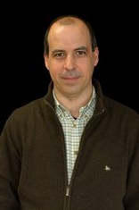

José Bacelar Almeida currently an Assistant Professor at the Department of Informatics at Universidade do Minho and researcher at HASLab/INESC TEC. He obtained my PhD degree in Computer Science from this university in 2003. His research interests lie in Cryptography and Information Security and its intersection with Program Verification.
He has been working on the development of high-assurance cryptographic implementations for the last 10 years, aiming to bridge the gap between theoretical security and real-world security. He is particularly interested in provable security and its interplay with the formal verification of cryptographic proofs and cryptographic software implementations.
Abstract: Jasmin is a low-level language designed to support the development of high-assurance and high-speed cryptographic software. It was designed to support the so-called “assembly in the head” programming, that smoothly combines high-level constructs (such as control-flow; typed variables and memory; etc.) that favour expressiveness and verification, with architectural-level ones (assembly instructions, flag manipulation, etc.) that empower programmers essentially the same level of control as if they were using directly assembly to develop optimised implementations. For the verification of Jasmin programs, the framework leverages on EasyCrypt — a theorem prover originally developed to formalise security proofs, which supports program logics for reasoning about correctness and equivalence of imperative programs.
In this talk we shall present the main features of the Jasmin/EasyCrypt development framework, and the design choices that have driven its development. In doing it, we intend to make the case that most of those features are shared by other applications domains beyond cryptographic software development, such as embedded or safety-critical systems.